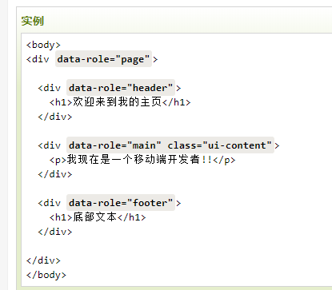
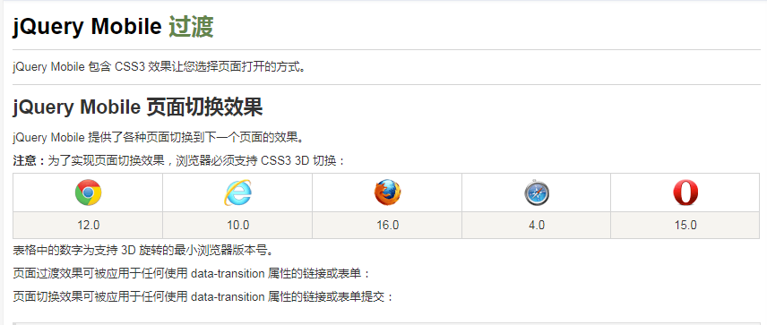
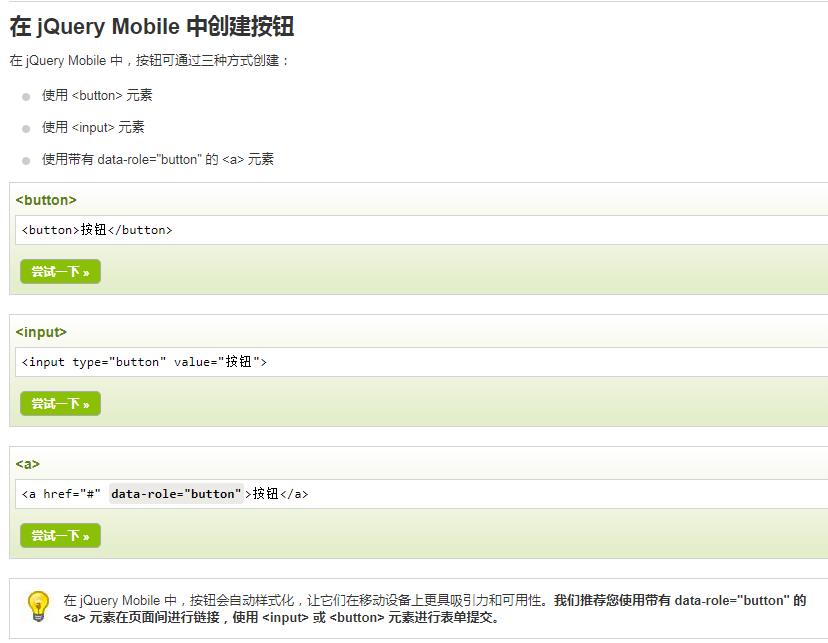

| 触摸事件同样可应用与桌面电脑上：点击或者滑动鼠标！ |
实例解析：

data-role="page" 是在浏览器中显示的页面。
data-role="header" 是在页面顶部创建的工具条 (通常用于标题或者搜索按钮)
data-role="main" 定义了页面的内容，比如文本， 图片，表单，按钮等。
"ui-content" 类用于在页面添加内边距和外边距。
data-role="footer" 用于创建页面底部工具条。
在这些容器中你可以添加任何 HTML 元素 - 段落, 图片, 标题, 列表等。
二、jQuery Mobile过渡
1.fade(默认)-淡入到下一页
2.flip-从后向前翻转到下一页
3.flow-抛出当前页，进入下一页
4.pop-像弹出窗口那样转到下一页
5.slide-从右向左滑动到下一页
6.slidefade-从右向左滑动并淡入到下一页
7.slideup-从下到上滑动到下一页
8.slidedown-从上到下滑动到下一页
7.turn-转向下一页
8.none-无过渡效果
8.slide-切换效果跳转页面（下个页面的a标签要使用data-direction="reverse"）
三、jQuery Mobile按钮
3.a标签class="ui-btn"按钮 4.a标签data-role="button"按钮 5.内联按钮:class="ui-btn ui-btn-inline"
8.后退按钮href="#" class="ui-btn" data-rel="back"
9.内联按钮:
灰色按钮 (默认)class="ui-btn ui-btn-inline" 黑色按钮class="ui-btn ui-btn-inline ui-btn-b"10.内联按钮带圆角与不带圆角效果：
按钮 2 class="ui-btn ui-btn-inline ui-corner-all" 按钮 2 class="ui-btn ui-btn-inline" 11.小按钮class="ui-btn ui-btn-inline ui-mini" 12.有阴影按钮class="ui-btn ui-btn-inline ui-shadow" 1四、jQuery Mobile按钮图标
左边箭头图标 右边箭头图标 信息图标 删除 后退 ui-btn-icon-right 扬声器 ui-btn-icon-top 挂锁 搜索 警告 网络ui-btn-icon-bottom 主页 动作只有图标没有文本的按钮 - 添加圆角及阴影:
搜索白色 "搜索" 图标 (默认):
白色图标(默认) 白色图标(默认)黑色 "搜索" 图标 (class="ui-alt-icon"):
黑色图标 黑色图标黑色 "搜索" 图标不使用灰色圆圈 (组合使用 "ui-nodisc-icon" 和 "ui-alt-icon"):
黑色图标 黑色图标五、jQuery Mobile弹窗
1.显示弹窗这是一个简单的弹窗
欢迎!
"ui-content" 类在弹窗使用 样式文本 时是特别有用的，它可以使得弹窗看起来更加美观时尚。 注意： 如果需要文本会包含多行。
我是不可取消的按钮 (data-dismissible="false)。唯一关闭这个弹窗的方式是通过点击右上角的关闭按钮。你无法通过点击弹窗之外的区域关闭弹窗。
我显示在窗口的中间部分。
我显示在 id="demo" 的元素上。
这是一个段落。这个段落包含了子元素：这是一个插入在段落中 id="demo" 的 span 元素 。
以下演示了弹窗所有过渡效果的实例：
注意： 从性能方面上考虑， jQuery Mobile 推荐使用 "pop", "fade" 或 "none" 过渡效果。
（默认）淡入data-transition="fade" 翻转flip 抛出当前页后显示flow 弹出pop 向左滑动slide 向左滑动并淡入slidefade 向上滑动slideup 向下滑动slidedown 转向turn 无过渡效果none这是一个简单的弹窗。
点击按钮打开一个带方向边框的弹窗： 弹框的data-arrow 属性，并指定值 "l" (左边), "t" (顶部), "r" (右边) or "b" (底部)
左边 顶部 右边 底部在左边框有个方向 data-arrow="l"。
在顶部边框有个方向 data-arrow="t"。
在右边框有个方向 data-arrow="r"。
在底部边框有个方向 data-arrow="b"。
点击图片弹窗

点击弹窗背景覆盖(data-overlay-theme="b"深色) data-overlay-theme="a"浅色
在我身后有个深色背景。